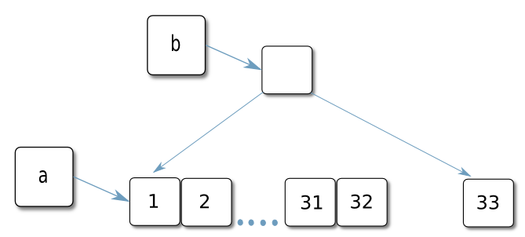
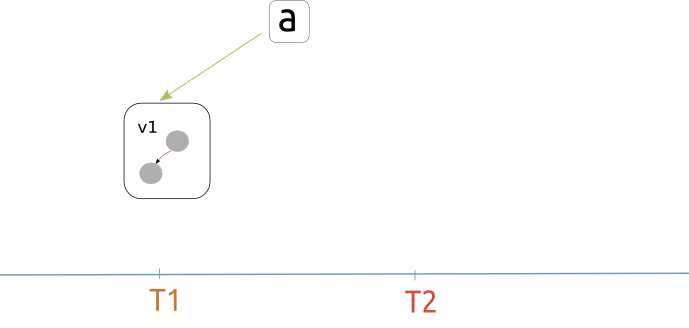

Your browser doesn't support the features required by impress.js, so you are presented with a simplified version of this presentation.
For the best experience please use the latest Chrome, Safari or Firefox browser. Upcoming version 10 of Internet Explorer should also handle it.
Clojure introduction
`` The way to functional epiphany , ,
History
- Development started in 2007
- By Rich Hickey
- Currently at version 1.3
Agenda
- Basics
- Datastuctures, sequences
- Concurrency and state
- Protocols and types
Syntax
'(); list
[]; vector
#{}; set
{}; hash
:keyword
'symbol
λ Functions
(def plus1 (fn [x] (+ 1 x)))
(defn plus1 [x] (+ 1 x))
(defn add-with [f x]
"applies f on x"
(f x))
(add-with plus1 2); 3
(add-with #(+ 1 %) 2); 3
Macros
(defmacro when [test & body]
"'(if test (do body))"
(list 'if test (cons 'do body)))
Namespaces
(ns intro
(:require [clojure.string :as str])
(:use
(clojure.contrib (json :only [read-json]))))
(str/blank? "")
immutable
,
persistent
and
asymptotic
equivalent to mutable ds
(def a (list 1 2))
(def b (cons 3 a))
(def a (into [] (range 32)))
(def b (conj a 33))
(def c (conj b (range (- 1025 33)))

A core abstraction producted and consumed by functions.
Implemented by map, vec, list and set.
Very usefull in stream processing
package clojure.lang;
public interface ISeq extends
IPersistentCollection {
Object first(); // first item
ISeq next(); // rest of
ISeq more();
ISeq cons(Object o);
}
(def a [2 3])
(first a); 2
(rest a); '(3)
(cons 1 a); '(1 2 3)
ℕ = {1,2,..}
(def n (iterate inc 0))
(take 5 n); '(0 1 2 3 4)
(take 5 (map #(* % %) n)); '(0 1 4 9 16)
(reduce + (take 5 n)); 10
{"results":[
{"seq":2,
"id":"8871420951859863603",
"changes":
[{"rev":"3-d56ec84a0932b2f6eb2251"}]},
{"seq":31,
"id":"6d97cf1c7df8ebd58f46cdbb",
"changes":
[{"rev":"2-3470a6223435b4ba8ae"}],
"deleted":true},
{"seq":40,
"id":"_design/managment",
"changes":
[{"rev":"1-3168fe416bb182276433c"}]}
...
(defn- bytes-seq [input]
"Turns: (. uc getInputStream)
into: (97 98 99 100 10 101 102 ..)"
(take-while #(not= -1 %)
(repeatedly #(. input read))))
; (a b c d \newline f g ..)
(map char '(97 98 99 100 10 101 102 ..))
; ((a b c d) (\newline) (f g) ..)
(partition-by #(= \newline % )
(a b c d \newline f g ..))
; ("abcd" "\n" "fg" ..)
(map #(reduce (fn [r c] (str r c)) "" %)
'((a b c d) (\newline) (f g) ..))
; ("abcd" "fg" ..)
(filter (comp not blank?)
("abcd" "\n" "fg" ..))
(defn changes-seq []
"A sequence made of couchdb changes stream"
(let [url (URL. (couch str changes))
conn (. url openConnection)
uc (.connect conn)]
(filter (comp not blank?)
(map into-string
(partition-by #(= \newline % )
(map char
(bytes-seq
(. uc getInputStream))))))))
Concurrency

Single value store manipulated via messages (Actor like)
Mutation: send, send-off
(def a (agent 5))
(dotimes [i 5]
; we use send-off and not send
(send-off a #(do (Thread/sleep 100) (inc %))))
@a ; 5
(await a)
@a ; 10
Synchronous non transactional storage with CAS semantics
Mutation done by reset!, compare-and-set! and swap!
(def x (atom 1))
(reset! x 2); 2
(compare-and-set! x 3 (inc 2)) ; -> false
(swap! x #(inc %)) ; -> 3
@x ; -> 3
Coordinated storage using MVCC STM
Mutation done via ref-set, alter and commute
(def account (ref 0))
(defn deposit [amount]
(alter account + amount ))
(future (dosync (deposit 5)))
(future
(dosync
(deposit -2)
(Thread/sleep 500); taking the time
(deposit 5)))
(future
(dosync (deposit 5)))
(defn deposit [amount]
(commute account + amount ))

Protocols
t y p e s
(defprotocol Hello
"A greeting protocol"
(say [this] "just saying hey"))
(defrecord Human [name age])
(extend-type Human Hello
(say [{:keys [name age]}]
(str "My is " name " and Im " age " old.")))
(defprotocol Write-JSON
(write-json [object out escape-unicode?]
"Print object to PrintWriter out as JSON"))
(defn date-str [date]
(let [props (juxt :hours :minutes :seconds)]
(join ":" (props (bean date)))))
(extend-type java.util.Date Write-JSON
(write-json [this out unicode]
(print out (date-str this))))
(json-str (java.util.Date.)); # 23:11:57
Summary